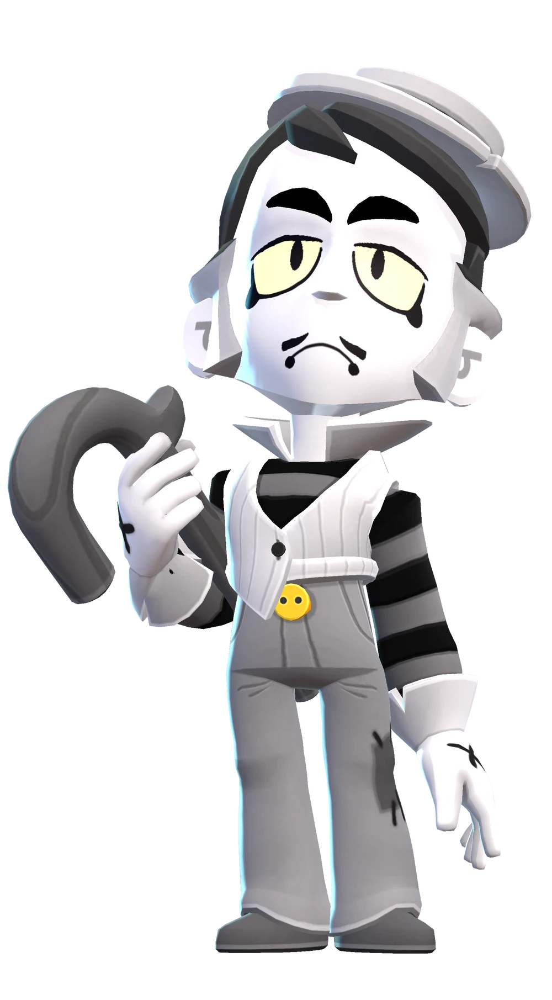

¿Quién es Gray?
Gray se presenta como un personaje de una vieja película de cine mudo. Se lo toma muy en serio, aunque a veces se le olvida mantener la boca cerrada cuando dispara balas con los dedos
Gray es un brawler Mítico, el cual fue añadido en la actualización de "Brawlidays 2022", siendo un brawler desbloqueable al hacer una misión exclusiva de ganar una sola partida. Este brawler tiene un ataque básico, el cual tarda en llegar a su destino final, marcando unas líneas por su recorrido, hasta ser impactado. Su súper crea un portal, en donde Gray y sus aliados podrán transportarse.
|  |
NIVEL DE FUERZA 11 |
Sus gadgets
BASTÓN: El siguiente disparo de Gray con Dedo revólver (su ataque básico) lanza un bastón que empuja un poco a los enemigos. |
PIANO DE COLA: El siguiente disparo del Dedo revólver (su ataque básico) marcará un objetivo en el suelo, donde un piano caerá al poco tiempo e infligirá daño a los enemigos que queden atrapados bajo el mismo. Sería toda una desgracia si alguien resultara herido... |
Sus habilidades estelares
 |
HERIDA FALSA: Cuando Gray tiene todos sus puntos de salud, el siguiente daño que le infligen se reduce un 50% |
 |
NUEVA PERSPECTIVA: Cuando Gray o sus aliados usan los portales, recuperan 1320 puntos de salud. |
 Braian Arancibia
Braian Arancibia Aya El Baarar
Aya El Baarar